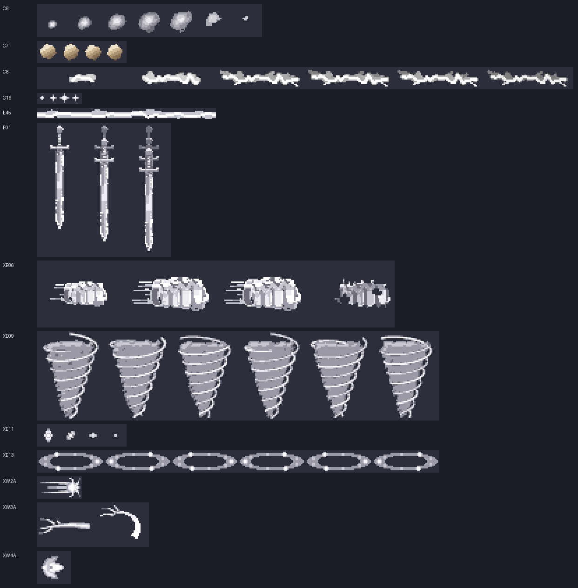

VFX 빈 곳 채우기 결과
새 시트 12장 (무료 워크벤치 10 + ComfyUI 시안 2, 유료 0회) + 게임 연결 + 코드만 바꿈 6건. 스펙: docs/specs/skill-vfx.md "빈 곳 채우기 계획".
1. 전후 나란히 보기
스킬을 고르면 왼쪽(작업 전)과 오른쪽(작업 후) 시험장이 같은 스킬·단계로 열린다. 각 화면 아래 버튼으로 다시 쓰기·일시정지·한 프레임씩 넘기기.
작업 전 (인계 브랜치)
작업 후 (impl-vfx6)
2. 새 시트 12장 (+ 다시 뽑은 C6)

측정(dev/vfx6/measure.py): 12장 모두 둘레 어두운 비율 0.00 · 벗겨짐 0% · 부스러기 프레임당 0~0.2.
3. 빈 곳 점검 재측정 (dev/review/vfx-gaps-probe.js)
스킬 × 단계(Lv1·★·★★·★★★)마다 프레임당 벡터 그리기 수(arc·ellipse·stroke·곡선, lineTo 는 ¼). 기준은 3 이하. 50종 × 4단계 시전 예외 0, 안 그려진 시트 0, 2차 대체 그림(QI_TEX_FALLBACK) 0.
| 스킬 | 작업 전 | 작업 후 | 남은 벡터의 정체 |
|---|